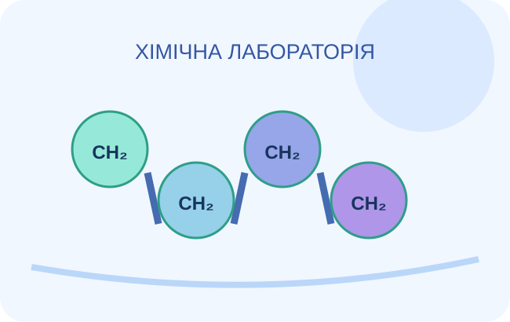

Хімія · 9 клас
Полімери на прикладі поліетилену
Чому властивості полімеру залежать від ланцюга?

Ключові слова та коротка теорія
МономерПолімерЛанкаПоліетилен
Полімер складається з великої кількості повторюваних структурних ланок. Поліетилен утворюється з етену.
Інтерактивне дослідження
🔬 Збираємо полімерний ланцюг
Змініть параметри, спрогнозуйте результат і перевірте свою гіпотезу.
⚗️
Оберіть параметри й запустіть дослід.
Перевірка розуміння
🧩 Практичні завдання
💬 Ваш висновок
У вікні друку виберіть «Зберегти як PDF». Відповіді залишаються у Вашому браузері.
Поверніться до головних ідей теми